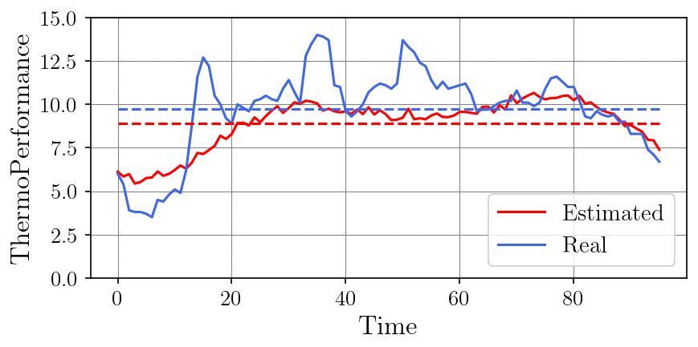
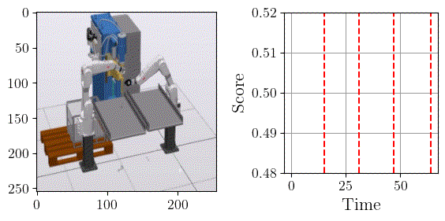
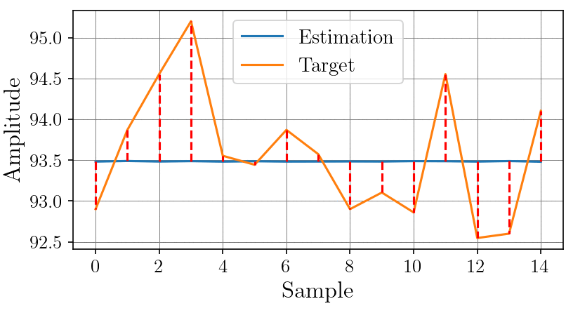
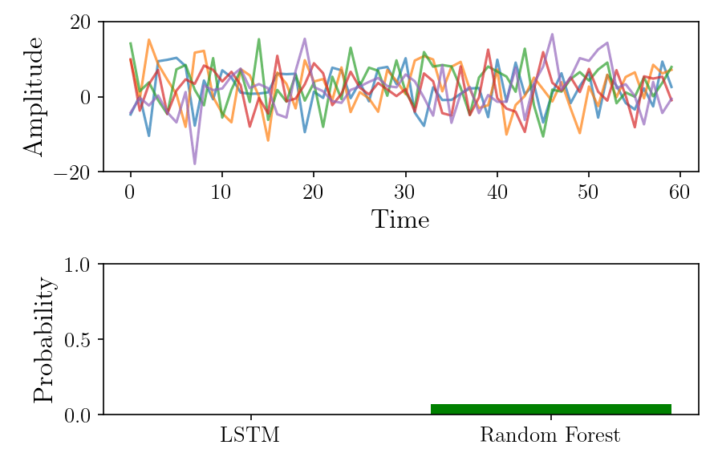

Featured Projects
An overview of my research and engineering projects focusing on AI, autonomous drones, and complex system optimization.
AI4Drone
Focuses on increasing logistics efficiency in North Rhine-Westphalia (NRW) using AI and deep learning within a highly automated drone network. It aims to overcome infrastructure bottlenecks using mixed-integer optimization combined with AI for optimal network, tour, and route planning while considering traffic, weather, and delivery priorities.

Predictive Urban Energy Management
This project optimizes urban energy supply by forecasting the heating demand of city households. Based on these predictions, the system plans optimal power plant operations and automatically schedules energy generation. During live operation, it continuously performs real-time plausibility checks to ensure forecasts align with actual consumption. If significant deviations or anomalies are detected, the system automatically triggers alerts for human operators to intervene.

Drone4Parcel5G
Leveraging the new 5G mobile network generation to establish safe and autonomous drone operations in the logistics sector. By combining drone manufacturing expertise, path planning software, and logistics allocation algorithms, this project demonstrates how 5G enables secure drone swarm operations for pharmaceutical and industrial deliveries.

PSAR
Development of an adaptive, AI-driven Augmented Reality (AR) assistance system using HoloLens 2 for complex industrial tasks. Through imitation learning and AI processing of heterogeneous data, the effort required to create AR content is reduced by 90%. Users are guided intuitively via 5G with <10ms latency, enabling real-time error detection and pre-action simulations.

SIDDA
Researching fully automated, intermodal drone networks for climate-neutral B2B distribution in suburban areas. It integrates static and mobile micro-hubs configured as a "drone airline" into existing logistics networks. A U-Space Service Provider prototype simulates drone behavior to optimize the ecological, economic, and social impact.

SeGuForm
An interdisciplinary approach combining modern automation and intelligent data analysis to secure 100% good-part production in automotive sheet metal manufacturing. Features include complete digital mapping, real-time simulation, automated 100% part measurement, and anomalous part correction guided by a digital twin using NC-supported incremental forming.

LiCO-AI
Optimizing the control of process parameters (recipes) in automotive aluminum die casting. The project involves defining KPIs, developing machine learning prediction modules, and extracting features from simulations without violating IP rights. Deep Neural Networks and statistical methods are utilized to model the degradation and fatigue state of the molds.
